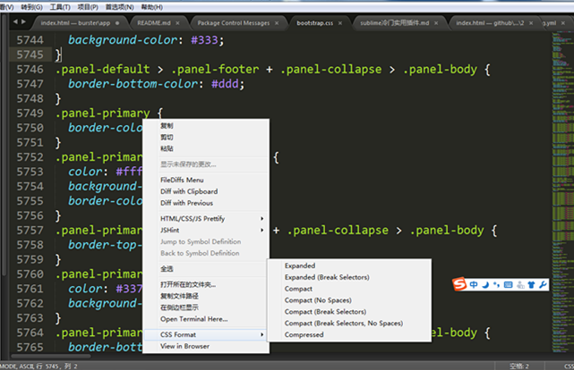

本地文件or夹 快捷搜索工具 – everything
http://www.voidtools.com/【官方下载地址】
基础使用:
- 输入关键词，本地搜索所有磁盘；例如：输入Programe Files

- 精确匹配关键词，点击search菜单栏选中Match Whole Word，或者快捷键Crtl+B

- 磁盘匹配，关键词之前加入已知磁盘

http://www.voidtools.com/【官方下载地址】
基础使用:
图片尺寸：1024*640px
1 | body{ |
演示截图：
| pc端 | phone端 |
|---|---|
 |
 |
1 | html: |
演示截图：
| pc端 | phone端 |
|---|---|
 |
 |
通过比较可知，当图片的尺寸不足以平铺整个屏幕背景时，cover法phone端会出现无法铺满的现象，而zindex方法可以解决这一问题。【stackoverflow详细解释】
测试demo代码
1 | <!DOCTYPE html> |
论sublime插件，我只服豪情大神
在Sublime Text中，按下Ctrl+Shift+P调出命令面板;
输入install 调出 Install Package 选项并回车;
输入pretty，并在列表中选择HTML-CSS-JS Prettify后回车即可安装
使用方法：打开一个HTML-CSS-JS-JSON中的任何一种文件，按下ctrl+Shirt+H（记得取消搜狗默认更换皮肤快捷键,避免冲突）;
特别提醒：该插件需要Nodejs的支持。如下图所示，找到相应系统配置本地node文件目录即可
 ;
;
在Sublime Text中，按下Ctrl+Shift+P调出命令面板;
输入install 调出 Install Package 选项并回车;
输入jshint，并在列表中选择JSHint Gutter后回车即可安装
使用指南：
JSHint插件不会自动执行，调出步骤：
1.安装完成后，进入一个本地js文件，移动到JSHint–>Set Plugin Options;
2.配置JShint文件。”lint_on_edit”改为true默认启用插件，也可以使用快捷键”ctrl+alt+j”启用插件（右击JSHint–>Set Keyboard Shortcuts自定义设置）
3.demo演示，插件使用
4.提示错误修改后

5.clear后没有报错了

特别提醒：该插件同样需要node的支持aa。
使用快捷键 ctrl+shift+T 呼出当前文件路径的控制台
用node，Grunt等等时调出控制台不要太6

1 | mkdir testgruntjs //创建名为testgruntjs的文件夹 |
安装完成后，本地的testgruntjs文件夹中已添加node_modules.
1 | mkdir app //新建app项目原文件夹 |
1 | npm init |
package.json文件已创建好，可以在本地编辑器中查看
1 | npm install grunt --save-dev |
初始化的devDependencies:
2
3
"grunt": "^1.0.1"
}
1 | npm install load-grunt-tasks --save-dev //告知用户当前的处理任务，如copy，clean... |
安装完两个插件的devDependencies变化：s
2
3
4
5
"grunt": "^1.0.1",
"load-grunt-tasks": "^3.5.2",
"time-grunt": "^1.4.0"
}
打开编辑器创建名为Gruntfile.js的文件，添加代码如下。其中app是源文件目录，dist是grunt插件处理后的目标文件目录。这里仅演示了文件拷贝、文件删除、js压缩、图片压缩的配置使用。
1 | 'use strict' //声明使用ES5 |
1 | npm install grunt-contrib-copy --save-dev //拷贝插件 |
安装完两个插件的devDependencies的再次变化：
2
3
4
5
6
7
"grunt": "^1.0.1",
"grunt-contrib-clean": "^1.0.0",
"grunt-contrib-copy": "^1.0.0",
"load-grunt-tasks": "^3.5.2",
"time-grunt": "^1.4.0"
}
1 | grunt copy //拷贝命令 |
* grunt-contrib-copy: 复制文件或目录
* grunt-contrib-clean: 删除文件或目录
* grunt-contrib-uglify: 压缩js文件（可实现多个文件的压缩及合并）
* grunt-contrib-cssmin：CSS文件压缩
* grunt-contrib-jshint: 用于javascript代码的检查（并会给出建议），可以避免出现一些低级语法问题 //sublime中可以安装jshint插件校验js
* grunt-contrib-imagemin：图片压缩 //建议安装0.3.0版本：npm install grunt-contrib-imagemin@0.3.0 --save-dev
* grunt-contrib-watch: 监听文件的变化
* grunt-contrib-concat: 合并文件
为啥要整理clearfix情妇呢！尼玛，打个清浮出来个情妇。之前在某程时情妇css在官网拿过来直接用，也没考虑里面的每条代码是什么实现原理！结果，出来混总是要还的！去某评面试时被问到clearfix里面的具体css代码时有点小小的懵逼，虽然能答出来几个，但是不确定的感觉很不爽。明明感觉会的知识点还掌握不了多尴尬。所以这件事教会我，学习要注重细节，眼高手低迟早会暴露。所以C君们，做个心细的Coder吧！
被浮动元素会脱离文档流，造成父元素高度为0的诡异现象；由以下demo可见：
未清除浮动:
已清除浮动:
html:1
2
3<div class="parent clearfix">
<div class="floated"></div>
</div>
css:1
2
3
4
5
6
7
8
9
10
11.clearfix:after {
content: '.'; //内容为“.”就是一个英文的句号而已。也可以不写。
display: block; //转化为块级元素
clear: both; //清除左右两边浮动
line-height: 0;
height: 0;
visibility: hidden; //可见度设为隐藏
}
.clearfix{
zoom:1;//兼容IE6、IE7，因为它俩不支持:after伪类,还好IE8以上是支持的
}
目前现任公司所有项目开发要求兼容到IE8。有一次我问经理为什么还要兼容到IE8，经理的回答我服了，“我们的项目是很国际化的，要考虑到非洲友人的硬件条件”。我想了想也是日了狗了，既然用的到互联网，尼玛还装不起高版本的浏览器。我看你们就继续扯犊子，继续惯着IE吧！废话不多说了，谈谈项目中遇到的IE兼容问题。
1 | filter: progid:DXImageTransform.Microsoft.AlphaImageLoader(src='图片地址',sizingMethod='scale'); |
1 | <!DOCTYPE html> |

1 | <p id="target" value="1"></p> |
1 | <p class="text"></p> |
1 | <div class="vm"></div> |
1 | <div class="parent"> |
1 | <div class="vm"></div> |
1 | <!DOCTYPE html> |
所以对应demo中，先执行了第20行代码，取到图片的width为0，然后第18行开始加载Image对象，完成后才能准确地取到图片的宽度；
css代码之所以初始化，是为了尽量减少各浏览器之间的兼容性问题!
body,ol,ul,h1,h2,h3,h4,h5,h6,p,th,td,dl,dd,form,fieldset,legend,input,textarea,select{margin:0;padding:0}
body{font:12px"宋体","Arial Narrow",HELVETICA;background:#fff;-webkit-text-size-adjust:100%;}
a{color:#2d374b;text-decoration:none}
a:hover{color:#cd0200;text-decoration:underline}
em{font-style:normal}
li{list-style:none}
img{border:0;vertical-align:middle}
table{border-collapse:collapse;border-spacing:0}
p{word-wrap:break-word}
body,ul,ol,li,p,h1,h2,h3,h4,h5,h6,form,fieldset,table,td,img,div{margin:0;padding:0;border:0;}
body{background:#fff;color:#333;font-size:12px; margin-top:5px;font-family:"SimSun","宋体","Arial Narrow";}
ul,ol{list-style-type:none;}
select,input,img,select{vertical-align:middle;}
a{text-decoration:none;}
a:link{color:#009;}
a:visited{color:#800080;}
a:hover,a:active,a:focus{color:#c00;text-decoration:underline;}
body, h1, h2, h3, h4, h5, h6, hr, p, blockquote, dl, dt, dd, ul, ol, li, pre, form, fieldset, legend, button, input, textarea, th, td { margin:0; padding:0; }
body, button, input, select, textarea { font:12px/1.5tahoma, arial, \5b8b\4f53; }
h1, h2, h3, h4, h5, h6{ font-size:100%; }
address, cite, dfn, em, var { font-style:normal; }
code, kbd, pre, samp { font-family:couriernew, courier, monospace; }
small{ font-size:12px; }
ul, ol { list-style:none; }
a { text-decoration:none; }
a:hover { text-decoration:underline; }
sup { vertical-align:text-top; }
sub{ vertical-align:text-bottom; }
legend { color:#000; }
fieldset, img { border:0; }
button, input, select, textarea { font-size:100%; }
table { border-collapse:collapse; border-spacing:0; }
html {overflow-y:scroll;}
body {margin:0; padding:29px00; font:12px"\5B8B\4F53",sans-serif;background:#ffffff;}
div,dl,dt,dd,ul,ol,li,h1,h2,h3,h4,h5,h6,pre,form,fieldset,input,textarea,blockquote,p{padding:0; margin:0;}
table,td,tr,th{font-size:12px;}
li{list-style-type:none;}
img{vertical-align:top;border:0;}
ol,ul {list-style:none;}
h1,h2,h3,h4,h5,h6{font-size:12px; font-weight:normal;}
address,cite,code,em,th {font-weight:normal; font-style:normal;}
1 | function add(a) { |
1 | function add(a) { |
1 | function add(a,b) { |